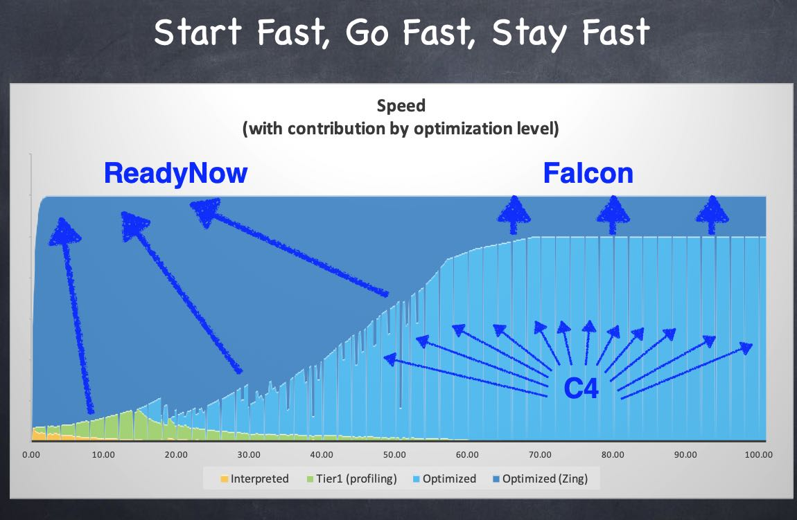
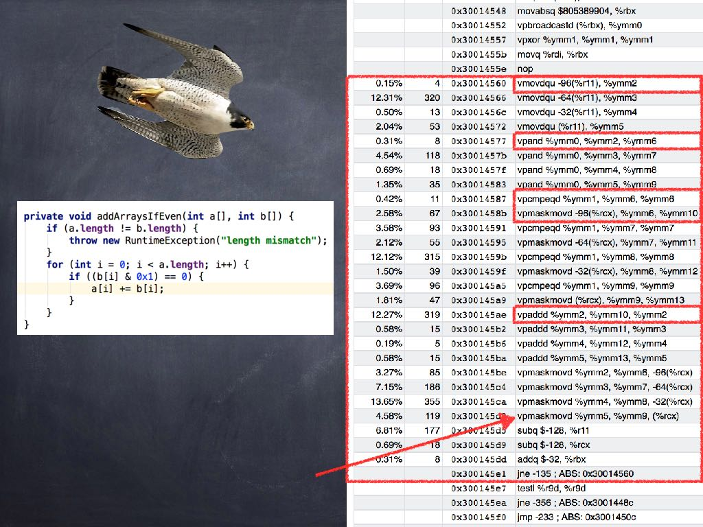
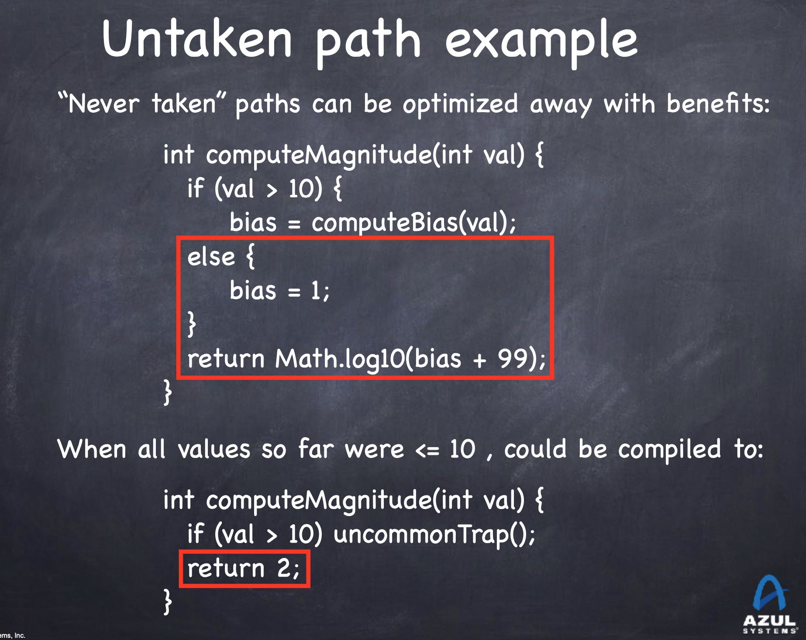
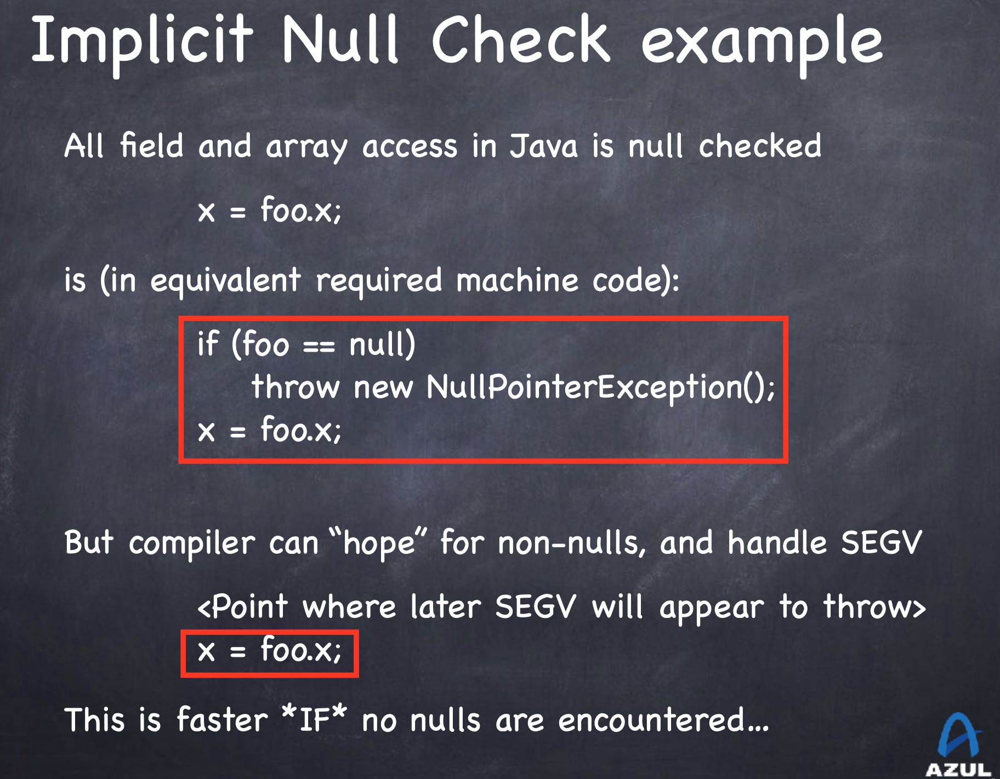
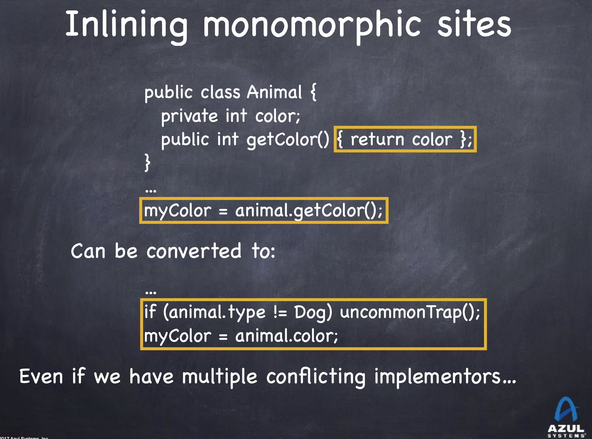
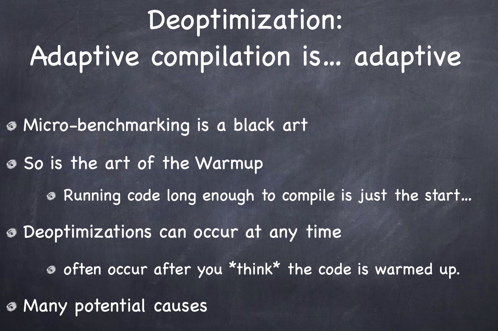
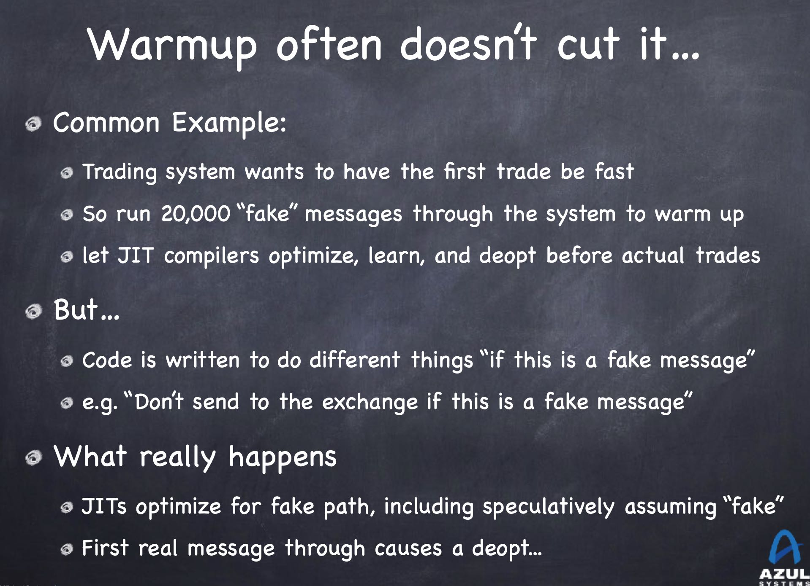
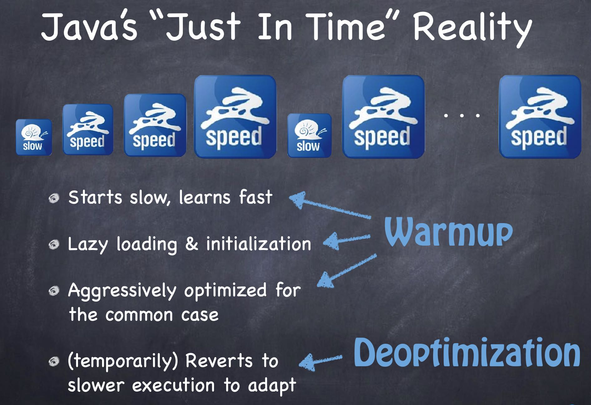
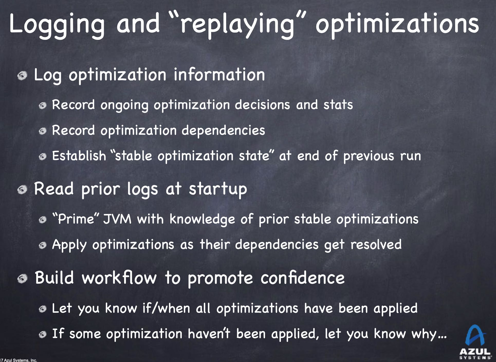

Java at Speed
https://www.infoq.com/presentations/java-jvm-perf/
azul几个产品解决的问题：
- ReadyNow 用于快速预热生成native code，并且减少de-optimization的可能性
- Falcon 利用LLVM来生成更加优化的代码，比如利用运行机器的向量化特性
- C4 来减少GC Pause造成的latency, 保持比如99.99%pth的latency尽可能低
组合起来就是 Start Fast, Go Fast, Stay Fast.

Falcon利用LLVM可以针对运行机器生成更好的指令代码

JIT可以利用运行时信息生成静态编译器做不到的优化，尤其是在某个分支预测执行上，因为JIT可以根据之前运行时收集到的信息，生成更加利于运行期间的指令代码。


另外JIT可以针对已经加载进来的classes进行类层次分析，如果发现某个类是final的话那么可以直接调用方法而不是虚方法，并且结合上面的预测技术，可以生成更高效的代码。比如下面代码中，如果我们可以推断出只有Dog类型实现了其他getColor, 其他类型都是直接返回color的话，那么就可以做些优化。

上面所有这些优化，都是在针对运行时信息收集到一定阶段(warmup)，并且某个假设成立的前提下，才会触发的。如果运行到一定阶段，发现运行轨迹和之前差别很大的话，那么才就会回退到解释器模式(de-optimization). 对于高性能程序，我们当然希望一上来就进行warmup, 很快时间就进入到native模式，但是很可能我们收集的信息和真实运行环境差别很大，导致刚开始是native模式，但是很快又触发了de-optimization.


设想一个高频交易程序，我们使用fake message的方式来warmup, 但是当真正进行交易的时候，其实是没有走fake message path的，实际情况就如下图。ReadyNow我理解应该是可以收集和利用真实的线上运行程序信息来做warmup, 确保不会出现deoptimization情况

